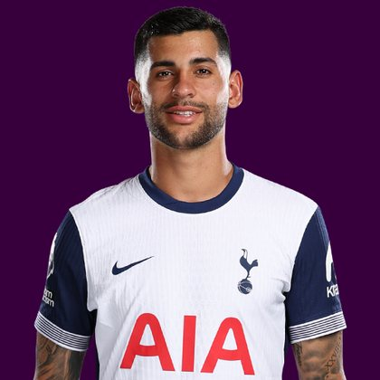

PITCHKEEP
Premier League ranks
Player File · DEF TOT · Premier #358

Cristian Romero
DEF · Spurs · age 28 · £5.0m
2025/26 Premier League
| Year | Starts | Min | G | A | xG | xA | CS | GC | Bonus | YC | Sleeper | FPL |
|---|---|---|---|---|---|---|---|---|---|---|---|---|
| 2025/26 | 22 | 1869 | 4 | 1 | 1.39 | 1.25 | 5 | 33 | 10 | 9 | 92.6 | 91 |
FPL news
Unavailable - Has joined Atletico Madrid permanently
Plus
- 92.6 Sleeper BPL 2025 points (Pitch #146).
Minus
- 9 yellows. Sleeper subtracts 2 a card.
- Unavailable; Has joined Atletico Madrid permanently.
- Consensus 226.0 vs Sleeper #146 - the industry is cooler than last year's box score.
- Board spread 145-195 (FPL 2025/26 Points to FPL xGI).
PitchKeep Take · The Premier
Cristian Romero is a defender for Spurs, age 28, £5.0m. The Premier ranks him 358th overall by splitting Sleeper BPL 2025 (#146, 92.6 points) with the consensus of 3 other boards (226.0). Last year's Sleeper line ran 80 spots ahead of the expert/FPL mix. The third list keeps some of that production bump and refuses to throw the other boards out. That is the whole point of not just republishing The Pitch.
The 2025/26 Premier League line is 22 starts and 1869 minutes, 4 goals and 1 assists, 5 clean sheets, 33 goals against, 58 tackles and 139 CBI. Official FPL scored it at 91 points (4.0 per match) with 10 bonus. Sleeper's table turned the same counting stats into 92.6. Defenders get 10 a goal, 7 an assist, 6 a clean sheet, and −2 a goal against. CBI at 0.4 and tackles at 1 are how a centre-back cracks the overall 50.
Underlying: 1.39 xG, 1.25 xA, 2.64 xGI. He finished 2.6 above expected goals. The defensive events are the floor: 58 tackles, 139 clearances/blocks/interceptions, 5 shutouts. Sleeper is built to notice that. ICT and xGI boards are not, which is why a centre-back's spread on this board is usually ugly and still informative. The friendliest board is FPL 2025/26 Points at 145; the coldest is FPL xGI at 195.
Market: £5.0m, 4 boards on the file. Price is the FPL tax, not the rank. The Premier is who produced and who the boards still believe. ICT 93.2.
Instruction: he is on the 400, which is already a statement, and he is not a star. Stash in Sleeper if the minutes are real. Do not let a Pitch screenshot make you start him over a Premier top-80. FPL flag: unavailable; Has joined Atletico Madrid permanently. Nearby on The Premier: Karl Darlow, Lucas Digne, Manuel Ugarte Ribeiro. Versus The Pitch (Sleeper-only #146), the hybrid moves him down to #358. That move is the third list doing its job.
He is 28, which on this board is neither a dart nor a warning label. Prime-age defenders get ranked on what they just did and whether Spurs still gives them the ball. 1869 minutes says yes. The 2026/27 FPL price (£5.0m) is the app's guess at whether that continues. The Premier is the blend of that guess and the box score.
Full-backs and centre-backs separate on this board by attacking events. 4 goals and 1 assists are how a defender outruns his GA column. Without those, you are betting 5 clean sheets and the CBI stream (139) against 33 goals against at −2 a piece. Spurs's 2026/27 defensive shape is therefore half of this player's rank. The other half already happened, across 22 starts.
How to use the file: The Pitch is the Sleeper-only 400 (he is #146 there). The Premier is the 50/50 with every other board we track. Attack, Midfield, Defence, and Keepers re-rank the same Sleeper table by position. BK Value on this page follows The Premier when you are on the hybrid calculator and The Pitch when you are on the Sleeper calculator. Same curve either way - 12,000 at 1.01. 9 yellows are a real Sleeper tax. Unranked sources are skipped, never treated as 999, which is why a player missing from Yahoo's XI is not secretly ranked 400th.
Sleeper vs FPL
Same 2025/26 line, two scoring tables
Board graph
Spread 145-195 · 4 sources
Tape · 2025/26 Premier League
Cristian Romero’s last gasp overhead kick 🤯 | Newcastle 2-2 Spurs | Premier League Highlights
Every Board
Spread 145-195 · 4 sources
| Source | Rank |
|---|---|
| FPL 2025/26 Points | 145 |
| FPL ICT Index | 145 |
| Sleeper BPL 2025 | 146 |
| FPL xGI | 195 |
PK News
- Emi Martinez transfer news: Chelsea complete signing of Argentina international goalkeeper from Aston Villa
- Chelsea XI vs Brighton: Martinez debut - Starting lineup, confirmed team news, injury latest for Premier League today
- Robert Sanchez transfer: Chelsea goalkeeper joins Serie A side Como on loan
- Fabrizio Romano Transfer News: Mac Allister to Man Utd, Nwaneri latest, Liverpool ‘positive’ over Alonso
All players · The Premier · The Pitch · PK News · Calculator